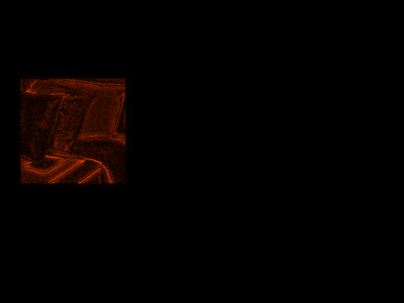
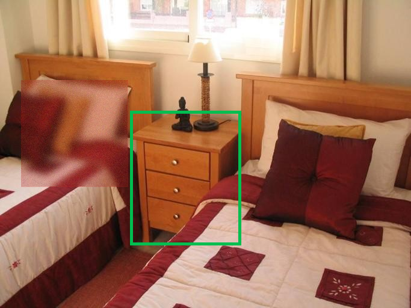

01. sflip_table_ADE_train_00000377




| Question | Is there a clearly visible table in the image? Respond with exactly one token: yes or no. |
|---|---|
| Original parsed/raw | yes / yes |
| Spurious parsed/raw | no / no |
| Patch bbox | [35, 133, 212, 310] |
| Target bbox | [216, 184, 400, 407] |
| Mask overlap pixels | 0 |
| Bbox distance | 4.0 |
| Reason | patch bbox is 4.0 px from the target bbox |
| Notes |